一、本节引言：
嘿嘿，看到这个题目，相信部分读者会问，你前面的Fragment写完了吗？嗯，没写完，因为想例子，需要 一点时间，为了提高效率，所以决定像多线程一样，并发的来写教程，这样可能可以加快写教程的进度， 到现在为止，刚好写了60篇，离完成入门教程还很远呢，而前面也说过，想在一个半到两个月之内完成 这套教程，今天已经9.1号了，要加吧劲~好的，废话就这么多，本节给大家介绍的是Android数据存储与 访问方式中的一个——文件存储与读写，当然除了这种方式外，我们可以存到SharedPreference，数据库， 或者Application中，当然这些后面都会讲，嗯，开始本节内容~
二、Android文件的操作模式
学过Java的同学都知道，我们新建文件，然后就可以写入数据了，但是Android却不一样，因为Android是 基于Linux的，我们在读写文件的时候，还需加上文件的操作模式，Android中的操作模式如下：

三、文件的相关操作方法
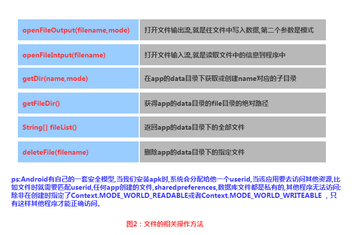
四、文件读写的实现
Android中的文件读写和Java中的文件I/O相同，流程也很简单，下面我们来写个简单的示例：
实现效果图：
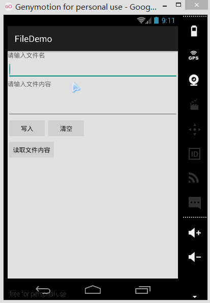
PS:这里用的是模拟器，因为笔者的N5并没有root，看不到文件的存储目录，下面我们打开DDMS 的File Exploer可以看到，在data/data/<包名>/file中有我们写入的文件：
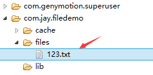
我们可以点击右上角的响应图标将文件导入到电脑中，并且打开验证写入的内容：
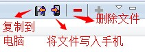 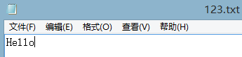
代码实现：
首先是布局文件:main_activity.xml
<LinearLayout xmlns:android="http://schemas.android.com/apk/res/android"
xmlns:tools="http://schemas.android.com/tools"
android:id="@+id/LinearLayout1"
android:layout_width="match_parent"
android:layout_height="match_parent"
android:orientation="vertical"
tools:context="com.jay.example.filedemo1.MainActivity">
<TextView
android:layout_width="wrap_content"
android:layout_height="wrap_content"
android:text="@string/nametitle" />
<EditText
android:id="@+id/editname"
android:layout_width="match_parent"
android:layout_height="wrap_content" />
<TextView
android:layout_width="wrap_content"
android:layout_height="wrap_content"
android:text="@string/detailtitle" />
<EditText
android:id="@+id/editdetail"
android:layout_width="match_parent"
android:layout_height="wrap_content"
android:minLines="2" />
<LinearLayout
android:layout_width="fill_parent"
android:layout_height="wrap_content"
android:orientation="horizontal">
<Button
android:id="@+id/btnsave"
android:layout_width="wrap_content"
android:layout_height="wrap_content"
android:text="@string/btnwrite" />
<Button
android:id="@+id/btnclean"
android:layout_width="wrap_content"
android:layout_height="wrap_content"
android:text="@string/btnclean" />
</LinearLayout>
<Button
android:id="@+id/btnread"
android:layout_width="wrap_content"
android:layout_height="wrap_content"
android:text="@string/btnread" />
</LinearLayout>
然后我们来写一个文件协助类：FileHelper.java
/**
* Created by Jay on 2015/9/1 0001.
*/
public class FileHelper {
private Context mContext;
public FileHelper() {
}
public FileHelper(Context mContext) {
super();
this.mContext = mContext;
}
/*
* 这里定义的是一个文件保存的方法，写入到文件中，所以是输出流
* */
public void save(String filename, String filecontent) throws Exception {
//这里我们使用私有模式,创建出来的文件只能被本应用访问,还会覆盖原文件哦
FileOutputStream output = mContext.openFileOutput(filename, Context.MODE_PRIVATE);
output.write(filecontent.getBytes()); //将String字符串以字节流的形式写入到输出流中
output.close(); //关闭输出流
}
/*
* 这里定义的是文件读取的方法
* */
public String read(String filename) throws IOException {
//打开文件输入流
FileInputStream input = mContext.openFileInput(filename);
byte[] temp = new byte[1024];
StringBuilder sb = new StringBuilder("");
int len = 0;
//读取文件内容:
while ((len = input.read(temp)) > 0) {
sb.append(new String(temp, 0, len));
}
//关闭输入流
input.close();
return sb.toString();
}
}
最后是MainActivity.java，我们在这里完成相关操作：
public class MainActivity extends AppCompatActivity implements View.OnClickListener {
private EditText editname;
private EditText editdetail;
private Button btnsave;
private Button btnclean;
private Button btnread;
private Context mContext;
@Override
protected void onCreate(Bundle savedInstanceState) {
super.onCreate(savedInstanceState);
setContentView(R.layout.activity_main);
mContext = getApplicationContext();
bindViews();
}
private void bindViews() {
editdetail = (EditText) findViewById(R.id.editdetail);
editname = (EditText) findViewById(R.id.editname);
btnclean = (Button) findViewById(R.id.btnclean);
btnsave = (Button) findViewById(R.id.btnsave);
btnread = (Button) findViewById(R.id.btnread);
btnclean.setOnClickListener(this);
btnsave.setOnClickListener(this);
btnread.setOnClickListener(this);
}
@Override
public void onClick(View v) {
switch (v.getId()) {
case R.id.btnclean:
editdetail.setText("");
editname.setText("");
break;
case R.id.btnsave:
FileHelper fHelper = new FileHelper(mContext);
String filename = editname.getText().toString();
String filedetail = editdetail.getText().toString();
try {
fHelper.save(filename, filedetail);
Toast.makeText(getApplicationContext(), "数据写入成功", Toast.LENGTH_SHORT).show();
} catch (Exception e) {
e.printStackTrace();
Toast.makeText(getApplicationContext(), "数据写入失败", Toast.LENGTH_SHORT).show();
}
break;
case R.id.btnread:
String detail = "";
FileHelper fHelper2 = new FileHelper(getApplicationContext());
try {
String fname = editname.getText().toString();
detail = fHelper2.read(fname);
} catch (IOException e) {
e.printStackTrace();
}
Toast.makeText(getApplicationContext(), detail, Toast.LENGTH_SHORT).show();
break;
}
}
}
五、读取SD卡上的文件
读取流程图：
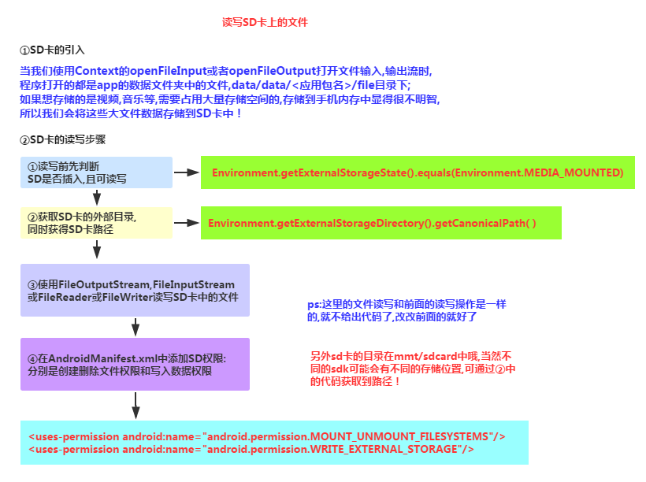
代码示例：
运行效果图：
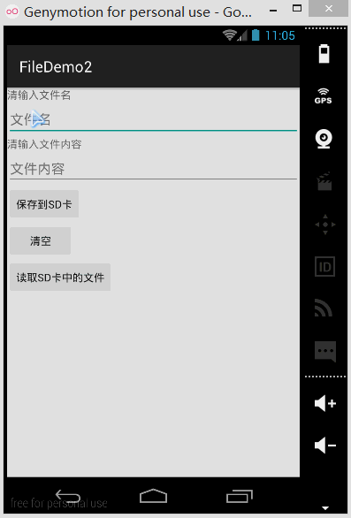
同样打开DDMS的File Explorer，在旧版本的系统上我们可以直接在mmt\sdcard上找到，但是新版本 的就可能需要我们自己找找了，首先我们来到这个路径下：
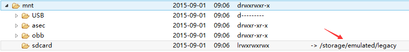
点开sdcard，但是没东西，我们继续找唠叨后面这个/storage/emulated/legacy下找：
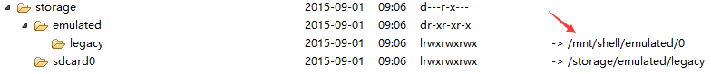
好吧，他又跳到别的地方去了，我们继续找/storage/shell/emilated/0
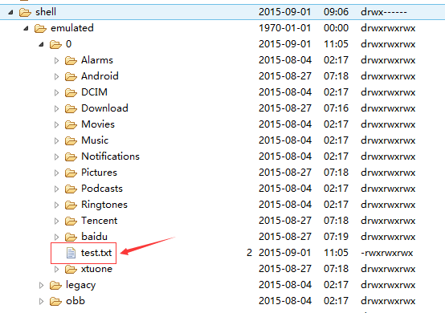
果然找到了，我们在SD卡里生成的test.txt！导出到电脑看下里面的内容：
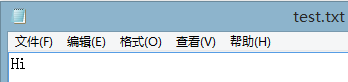
嘿嘿，果然读写SD卡成功~接下来我们来看下代码是怎么写的：
代码实现：
main_activity.xml:
<LinearLayout xmlns:android="http://schemas.android.com/apk/res/android"
xmlns:tools="http://schemas.android.com/tools"
android:id="@+id/LinearLayout1"
android:layout_width="match_parent"
android:layout_height="match_parent"
android:orientation="vertical"
tools:context="com.jay.example.filedemo2.MainActivity">
<TextView
android:layout_width="wrap_content"
android:layout_height="wrap_content"
android:text="清输入文件名" />
<EditText
android:id="@+id/edittitle"
android:layout_width="match_parent"
android:layout_height="wrap_content"
android:hint="文件名" />
<TextView
android:layout_width="wrap_content"
android:layout_height="wrap_content"
android:text="清输入文件内容" />
<EditText
android:id="@+id/editdetail"
android:layout_width="match_parent"
android:layout_height="wrap_content"
android:hint="文件内容" />
<Button
android:id="@+id/btnsave"
android:layout_width="wrap_content"
android:layout_height="wrap_content"
android:text="保存到SD卡" />
<Button
android:id="@+id/btnclean"
android:layout_width="wrap_content"
android:layout_height="wrap_content"
android:text="清空" />
<Button
android:id="@+id/btnread"
android:layout_width="wrap_content"
android:layout_height="wrap_content"
android:text="读取sd卡中的文件" />
</LinearLayout>
接着我们来写一个SD操作类： SDFileHelper.java
/**
* Created by Jay on 2015/9/1 0001.
*/
public class SDFileHelper {
private Context context;
public SDFileHelper() {
}
public SDFileHelper(Context context) {
super();
this.context = context;
}
//往SD卡写入文件的方法
public void savaFileToSD(String filename, String filecontent) throws Exception {
//如果手机已插入sd卡,且app具有读写sd卡的权限
if (Environment.getExternalStorageState().equals(Environment.MEDIA_MOUNTED)) {
filename = Environment.getExternalStorageDirectory().getCanonicalPath() + "/" + filename;
//这里就不要用openFileOutput了,那个是往手机内存中写数据的
FileOutputStream output = new FileOutputStream(filename);
output.write(filecontent.getBytes());
//将String字符串以字节流的形式写入到输出流中
output.close();
//关闭输出流
} else Toast.makeText(context, "SD卡不存在或者不可读写", Toast.LENGTH_SHORT).show();
}
//读取SD卡中文件的方法
//定义读取文件的方法:
public String readFromSD(String filename) throws IOException {
StringBuilder sb = new StringBuilder("");
if (Environment.getExternalStorageState().equals(Environment.MEDIA_MOUNTED)) {
filename = Environment.getExternalStorageDirectory().getCanonicalPath() + "/" + filename;
//打开文件输入流
FileInputStream input = new FileInputStream(filename);
byte[] temp = new byte[1024];
int len = 0;
//读取文件内容:
while ((len = input.read(temp)) > 0) {
sb.append(new String(temp, 0, len));
}
//关闭输入流
input.close();
}
return sb.toString();
}
}
接着MainActivity.java实现相关逻辑：
public class MainActivity extends AppCompatActivity implements View.OnClickListener{
private EditText editname;
private EditText editdetail;
private Button btnsave;
private Button btnclean;
private Button btnread;
private Context mContext;
@Override
protected void onCreate(Bundle savedInstanceState) {
super.onCreate(savedInstanceState);
setContentView(R.layout.activity_main);
mContext = getApplicationContext();
bindViews();
}
private void bindViews() {
editname = (EditText) findViewById(R.id.edittitle);
editdetail = (EditText) findViewById(R.id.editdetail);
btnsave = (Button) findViewById(R.id.btnsave);
btnclean = (Button) findViewById(R.id.btnclean);
btnread = (Button) findViewById(R.id.btnread);
btnsave.setOnClickListener(this);
btnclean.setOnClickListener(this);
btnread.setOnClickListener(this);
}
@Override
public void onClick(View v) {
switch (v.getId()){
case R.id.btnclean:
editdetail.setText("");
editname.setText("");
break;
case R.id.btnsave:
String filename = editname.getText().toString();
String filedetail = editdetail.getText().toString();
SDFileHelper sdHelper = new SDFileHelper(mContext);
try
{
sdHelper.savaFileToSD(filename, filedetail);
Toast.makeText(getApplicationContext(), "数据写入成功", Toast.LENGTH_SHORT).show();
}
catch(Exception e){
e.printStackTrace();
Toast.makeText(getApplicationContext(), "数据写入失败", Toast.LENGTH_SHORT).show();
}
break;
case R.id.btnread:
String detail = "";
SDFileHelper sdHelper2 = new SDFileHelper(mContext);
try
{
String filename2 = editname.getText().toString();
detail = sdHelper2.readFromSD(filename2);
}
catch(IOException e){e.printStackTrace();}
Toast.makeText(getApplicationContext(), detail, Toast.LENGTH_SHORT).show();
break;
}
}
}
最后别忘记在AndroidManifest.xml写上读写SD卡的权限哦！
<!-- 在SDCard中创建与删除文件权限 -->
<uses-permission android:name="android.permission.MOUNT_UNMOUNT_FILESYSTEMS"/>
<!-- 往SDCard写入数据权限 -->
<uses-permission android:name="android.permission.WRITE_EXTERNAL_STORAGE"/>
六、关于原生模拟器SD卡的问题
如果是真机调试的话通常都是可以的,对于原生虚拟机的话就问题多多了,再我们前面使用 Environment.getExternalStorageState().equals(Environment.MEDIA_MOUNTED)可能 一直返回的是false，就是SD卡不存在，这个是主要的问题，现在新版本的SDK都会在 创建AVD的时候会同时申请一块SD卡的存储区域的
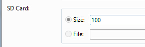
对于旧版本的sdk或者其他原因可能需要手动关联下sd卡,设置如下: ①找到创建好的avd的镜像的路径: 点击打开avd界面,点击detail,查看avd镜像的目录下
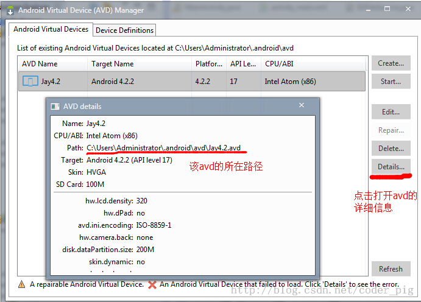
②来到avd镜像所在的路径下,复制sdcard.img的路径: 比如我的:-sdcard C:\Users\Administrator.android\avd\Jay4.2.avd\sdcard.img
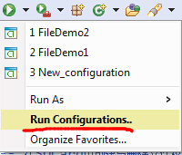
③接着点击 来到以下界面:
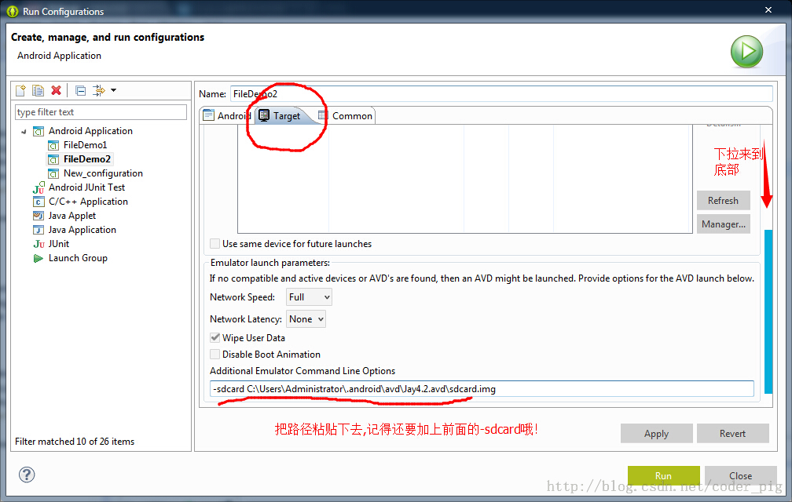
最后apply以下,然后Run就可以了!
七、读取raw和assets文件夹下的文件
相信大家对两个文件夹并不陌生，如果我们不想自己的文件被编译成二进制文件的话， 我们可以把文件放到这两个目录下，而两者的区别如下：
res/raw：文件会被映射到R.java文件中，访问的时候直接通过资源ID即可访问，而且 他不能有目录结构，就是不能再创建文件夹assets：不会映射到R.java文件中，通过AssetManager来访问，能有目录结构，即， 可以自行创建文件夹 读取文件资源：
res/raw：
InputStream is =getResources().openRawResource(R.raw.filename);
assets：
AssetManager am = getAssets();
InputStream is = am.open("filename");
代码下载： FileDemo.zip：下载 FileDemo.zip FileDemo2.zip：下载 FileDemo2.zip
八、本节小结：
好的，关于Android的数据存储与访问的第一节——文件读写就到这里，如果在学习本文中 遇到什么问题，或者觉得有些纰漏的地方，欢迎提出，万分感激，谢谢~